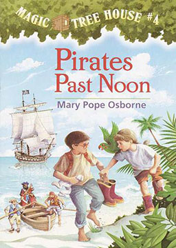

神奇树屋4: 海盗的藏宝图 (Magic Tree House: Pirates Past Noon)
作者：玛丽· 波· 奥斯本 (Mary Pope Osborne) [美国]
你听过加勒比海的海盗与宝藏吗？这一回，神奇树屋带杰克和安妮回到三百年前的海盗时代。在荒岛上，兄妹俩被邪恶的独眼船长抓上船，和海盗一起出海寻宝！猜猜看，他们能不能找到传说中的宝藏，并且平安的逃离海盗的魔掌？还有，在这一集里，神秘人M的身分即将揭晓，他究竟是谁？又会带给杰克和安妮什么样惊奇的事件？
难度：
初中
长度：
短篇
分类：
儿童
第一章: 太晚了！ Too Late!
第二章: 蓝色、明亮的大海 The Bright Blue Sea
第三章: 小船上的三个人 Three Men in a Boat
第四章: 无用的战利品 Vile Booty
第五章: 孩子的宝藏 The Kid's Treasure
第六章: 鲸鱼的眼睛 The Whale's Eye
第七章: 飓风来了 Gale's a-Blowin'
第八章: 挖呀，蠢猪！快挖！ Dig, Dogs, Dig!
第九章: 神秘的M The Mysterious M
第十章: 又见宝藏 Treasure Again